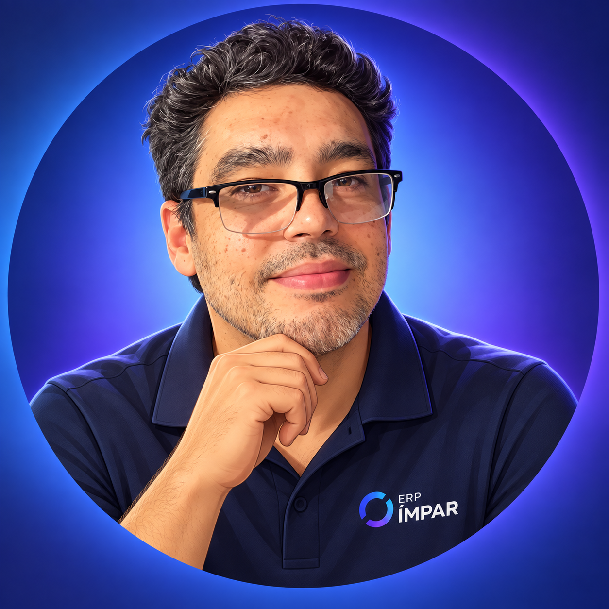

GEORGE
ASSISTENTE EXECUTIVO • ERP ÍMPAR
🎙
VOZ

George
À disposição
Oi! Eu sou o George.
Como posso te ajudar hoje?
GEORGE
Oi! Eu sou o George. Como posso te ajudar hoje?
▶ Apresentar a visão ao Rafael
⏸ Pausar escuta
🎙 Retomar escuta
■ Encerrar reunião + gerar ata
Cancelar